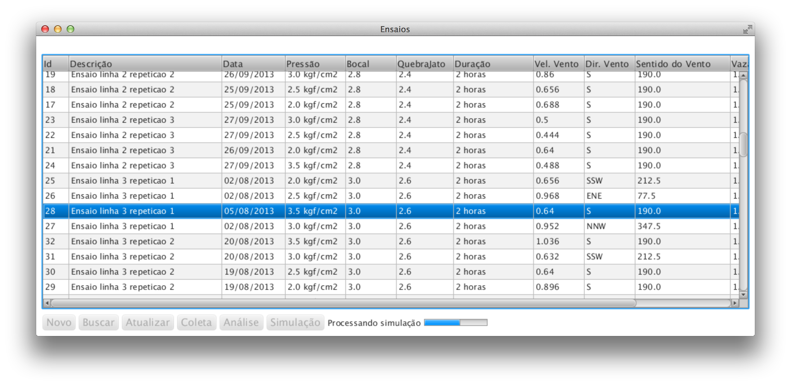

Está funcionalidade é bem específica com o um determinado tipo de ensaio, para ser aplicada é necessário que ensaio possua 24 metros x 24 metros com espaçamento de pluviometros medindo 1.5 metros. A funcionalidade consiste em pegar os campos do ensaio, bocal, quebra jato, pressão direção do vento e a velocidade do vento, através de uma rede neural treinada que recebe esses parâmetros e retorna as 256 coletas correspondentes, são dados simulados que ser aproximam dos dados reais.
Para utilizar a função selecione o ensaio a ser clonado com as especificações de medida citado anteriomente, a acione o botão , o processo poderá ser acompanhado visualizando a barra de progresso, após será atualizado a listagem de ensaios, para identificar o ensaio simulado gerado, procure na descrição do ensaio clonado mais a palavra "simulado";
